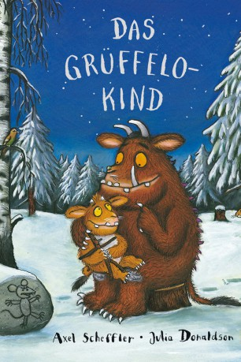

gesehen am 25.06.2015
gesehen am 25.06.2015Alternativ: The Gruffalo's Child gesehen am 25.06.2015
 
 IMDB-Wertung: 7.1 / 10
IMDB-Wertung: 7.1 / 10  Metascore:
Metascore: 
Vor vielen Jahren wurde der große, mächtige Grüffelo von der kleinen Maus mit einem schlauen Trick ins Bockshorn gejagt. Seither hat er eine Heidenangst vor dem frechen Nager und hält sich fern vom dunklen Wald, in dem die Maus lebt. Auch dem Grüffelokind hat der Vater eingeschärft, dass der Wald nichts Gutes verheißt. Grüffelokinder aber sind neugierig, und eines Nachts macht es sich auf den Weg, um die mysteriöse Maus aufzuspüren. Als es im Schnee auf eine längliche Spur stößt, ist das Grüffelokind fast schon sicher, am Ziel zu sein – doch dann stellt sich heraus, dass die Schlange diese Spur hinterlassen hat. Furchtlos wandert das Grüffelokind weiter und findet bald eine Klauenspur, die allerdings der Eule gehört. Und auch einige Pfotenabdrücke führen nicht zum Ziel, denn diese hat der Fuchs hinterlassen. Das Grüffelokind ist enttäuscht: Gibt es die böse Maus am Ende vielleicht gar nicht? Aber schließlich stößt es bei seiner unermüdlichen Suche doch noch auf die richtige Spur ...
Jahr: 2011
Dauer: 27 Minuten
FSK:
Land: England Studio: Concorde Home EntertainmentTonspuren: DTS - ,
Untertitel:
Auflösung: 1080p (1920x1080) Größe: 2252 MB
Genre: Animation/Trick, Familie
Regisseur: Uwe Heidschötter, Johannes Weiland
Drehbuch: Julia Donaldson, Axel Scheffler, Julia Donaldson, Johanna Stuttmann
Soundtrack: René Aubry
Darsteller:
 Helena Bonham Carter als Mother Squirrel
Helena Bonham Carter als Mother Squirrel Shirley Henderson als Gruffalo's Child
Shirley Henderson als Gruffalo's Child Robbie Coltrane als Gruffalo
Robbie Coltrane als Gruffalo Rob Brydon als Snake
Rob Brydon als Snake John Hurt als Owl
John Hurt als Owl Tom Wilkinson als Fox
Tom Wilkinson als Fox James Corden als Mouse
James Corden als MouseDatei: X:\Kinder Collections\Grüffelo\Grüffelokind - Kleines Monster ganz groß, Das (2011, FSK, 1920x1080).mkv seit 29.04.2015
Festplatte: Kinder-Filme+Trick
 Alle Filme aus Gruppe 'Kinder Collections\Grüffelo'
Alle Filme aus Gruppe 'Kinder Collections\Grüffelo'